카카오웹툰 추천 인기 순위 TOP 30
카카오웹툰에서 지금 연재 중인 작품을 카카오웹툰 공식 인기 순위 순서로 모았어요. 네이버웹툰·카카오웹툰·레진코믹스에서 조건에 맞는 작품 944개 중 인기 순으로 30개를 골랐어요. 인기 TOP 3: SSS급 죽어야 사는 헌터, 템빨, 무장 - 무투전
2026-10-17 기준 · 성인 작품 제외
내 취향으로 더 좁혀서 추천받기 →-
1
 카카오웹툰
카카오웹툰SSS급 죽어야 사는 헌터
F급 말단 헌터 ‘김공자‘. 랭킹 1위 ‘염제‘를 부러워하던 어느 날, 무려 S+급 스킬을 얻는다. 하지만 기쁨도 잠시, 어째 스킬 내용이 이상하다?! 상대의 스킬 중 1개를 복사한다,까지는 좋은데… "뭐? 내가 죽어야만 발동된다고?!" 죽어야 사는 헌터의 인간찬가 <SSS급 죽어야…
눈물샘자극학원물회귀카카오웹툰에서 보기 → -
2
 카카오웹툰
카카오웹툰템빨
[신영우 (유저 네임: 그리드)] 세계 최고의 가상 현실 게임 <SATISFY>. 현실에서나, 게임 속에서나, 불운은 항상 그의 곁을 맴도는데.... 퀘스트 수행 중 우연히 발견한 게임 속 로또, '파그마의 기서'. 20억 명이 넘는 유저 중 유일한 최강의 레전드리 직업으로 전직. "…
사이다학원물게임판타지카카오웹툰에서 보기 → -
3
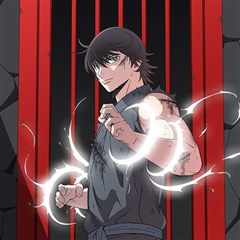
카카오웹툰무장 - 무투전
고려를 지키는 무신이라 불리는 권. 그의 어린 시절부터 이야기는 시작된다. 주인공 권과 그의 형 정은 고려에서 가장 강했던 무인이자 노비였던 만적의 아들들이다. 아버지 만적이 노비 해방 운동을 일으키지만 실패로 끝나고 죽음을 맞자 정과 권은 누군가로부터 계속해서 목숨을 위협받는다. 살…
자극적인액션복수극카카오웹툰에서 보기 → -
4
 카카오웹툰
카카오웹툰레드스톰 - 왕의 귀환
피에 젖은 사막. 붉은 사막을 용납할 수 없던 한 소년. 소년은 사막의 무신이 되어 사막을 구하지만 이제는 세계가 피에 젖으려 한다. 무신은 이제 사막을 넘어 세계를 구하려 한다. “4년 만에 돌아온 그로우, 왕의 귀환. 이제는 사막에서 전쟁을 보여줘야 할 때다.”
액션성장물카카오웹툰에서 보기 → -
5
 카카오웹툰
카카오웹툰픽 미 업!
그 누구도 던전의 끝까지 오르지 못한 극악의 난이도를 자랑하는 모바일 가챠 게임 <픽 미 업!(Pick me up!)> 마스터 오브 마스터라 불리는 세계 랭킹 5위의 마스터 '로키'는 던전을 깨던 중 정신을 잃게 된다. 깨어나 보니 레벨도 1, 등급도 1성인 <픽 미 업!> 속 영웅…
사이다액션게임판타지카카오웹툰에서 보기 → -
6카카오웹툰
괴담에 떨어져도 출근을 해야 하는구나
[ ⚠️ 해당 작품에는 공포 연출 및 폭력적·잔혹한 장면이 포함되어 있습니다. 이용에 참고 부탁드립니다. ] 소중한 연차까지 내고 갈 정도로 좋아하던 '어떤 현대판타지' 팝업 이벤트. 그리고 그날, 그 현판 속으로 빙의당했다. 무려 유명 대기업에 막 취직한 신입사원으로! 복지 좋고 연…
미스터리카카오웹툰에서 보기 → -
7
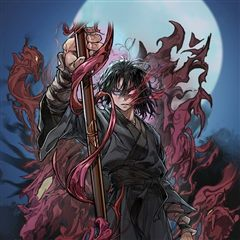
카카오웹툰창귀무쌍
평생 전장 만을 활보하며 살아온 늙은 노병 '추이'는 자신이 죽여 온 자들의 원념에 사로잡혀 죽음에 이른다. 추이가 다시 눈을 떴을 때, 이유는 알 수 없지만 아직 무공도 배우지 못하고 쟁자수로 일하던 어린 시절로 회귀해 있었다. 다시 돌아온 추이는 전생의 인연인 호예양을 떠올리며 호…
자극적인액션복수극카카오웹툰에서 보기 → -
8
 카카오웹툰
카카오웹툰막내가 뭔갈 많이 숨김
마법사 소년병으로 개고생하던 전쟁터에서 전생의 기억이 떠올랐다. 그리고 이곳이 <폐허 위에 꽂은 검> 소설 속이라는 것도. 하필이면 종말의 몰살엔딩이 예정된 전쟁 소설 속에 빙의했냐고!! 끔찍한 결말을 피하자면 ‘영웅’ 레비아탄 제베르트 옆에 딱 붙어 그가 죽지 않도록 잘 감시해야 한…
힐링로판육아물카카오웹툰에서 보기 → -
9
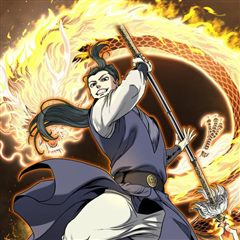
카카오웹툰로그인 무림
세상의 경계인 게이트에서 몬스터 사냥을 하는 헌터들이 잘 먹고 잘 사는 시대. 주인공 진태경은 최하위 헌터라 벌이가 시원찮다. 어느 날, 낡은 VR 게임기를 줍게 되고 접속하니 무림의 세계가 펼쳐진다. 우여곡절 끝에 현실로 돌아온 태경은 무림에서 얻었던 힘이 현실에서도 그대로 남아있음…
개그서스펜스액션게임판타지카카오웹툰에서 보기 → -
10
 카카오웹툰
카카오웹툰관존 이강진
미친놈인가? 아니면 흔한 관심종자인가? 사람의 다름을 이해 못 하는 제자 이강진. 그리고 그걸 이해시켜주고자 하는 스승 곽노. 두 사제師弟의 따뜻한 휴먼스토리.
액션성장물카카오웹툰에서 보기 → -
11
 카카오웹툰
카카오웹툰악어
19세의 나이, 살인을 저지르고 10년의 수형 생활을 마친 정인후. 출소 후 삶을 꿈꾸지만 현실을 쉽지않다. 그러던 어느 날, 과거 자신이 죽인 김상철의 아내 윤진희가 찾아와 아들 김루환의 경호를 제안한다.
자극적인액션느와르카카오웹툰에서 보기 → -
12
 카카오웹툰
카카오웹툰검술명가 막내아들
진 룬칸델 대륙 최고의 검술명가, 룬칸델의 막내아들 룬칸델 역사상 최악의 둔재 비참하게 쫓겨나 허무한 최후를 맞이한 그에게 다시 한 번 기회가 주어졌다. “너는 이 힘을 어떻게 사용하고 싶더냐?” “저를 위해 사용하고 싶습니다.” 전생의 기억과 압도적인 재능, 그리고 신과의 계약 최강…
액션회귀카카오웹툰에서 보기 → -
13

-
14
 카카오웹툰
카카오웹툰군림천하
"너만은 꼭 군림천하 해야 한다!” 그 한마디로 진산월의 운명이 결정됐다. 스물세 살, 그는 종남파의 장문인이 되었다. 남은 이들은 단 8명의 제자뿐. 한때 천하제일을 꿈꿨지만, 지금은 명맥만을 잇는 문파. 사부의 유지를 위해, 살아남기 위해— 진산월은 비정한 강호로 나아간다.
자극적인성장물액션카카오웹툰에서 보기 → -
15
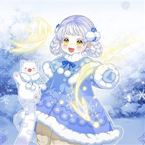
카카오웹툰흑표 가문의 설표 아기님
잡종으로 태어나 외할아버지에게 학대당하다가 죽었다. 내가 가문의 이능을 발현하지 못한 쓸모없는 아이였기 때문에. 기억을 가진 채 과거로 돌아왔지만, 선택지는 과거와 그리 다르지 않았다. 이대로 살다가 전생과 똑같이 학대당해 죽거나, 나를 끔찍하게 싫어하는 아빠를 찾아가거나. '다시 죽…
로판인외존재카카오웹툰에서 보기 → -
16
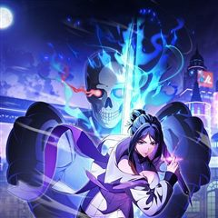
카카오웹툰해골병사는 던전을 지키지 못했다
나는 ‘해골병사’. 주인인 서큐버스님을 용사로부터 지키지 못하고 그저 하찮게 부서져 버린 일개 몬스터. 그렇게 죽음을 맞이하는 줄 알았다. 그러나 정신을 차려보니, 20년 전 사령술사에 의해 눈을 뜬 그 날로 돌아왔다. ‘띠링!’ 남들에게는 보이지 않는 상태창과 함께, 죽어도 죽어도…
미스터리서스펜스학원물게임판타지카카오웹툰에서 보기 → -
17
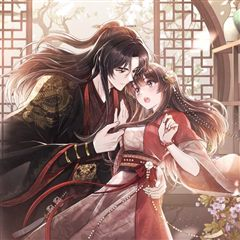
카카오웹툰천마신교 최강하녀
평범한 회사원이었던 ‘나’는 어느 날 무협 소설 속 하녀, 신설하로 눈을 뜬다. 홀몸으로 자신을 키워준 할머니를 위해 마교성 하녀로 들어가 5년의 계약 기간을 버텨낸다. 그리고 시간이 흘러, 이제 단 두 달이면 마교를 떠날 수 있었는데— 하필이면 잔혹하기로 악명 높은 남자, 적이건의…
설렘폭발로판로맨틱코미디카카오웹툰에서 보기 → -
18
 카카오웹툰
카카오웹툰재앙급 영웅님이 귀환하셨다
지상에 최강의 영웅이 있었다. “하지만 죽었잖아. 우리가 죽인 놈이 어떻게 돌아와?” “그러게. 돌아올 수 있으면 한번 돌아와 보라지.” 그런데 20년 만에 진짜 돌아와 버렸다? “뭘 그리 놀래? 왜. 양심에 찔릴 짓이라도 하셨나?” 이 XX들. 가만 안 둔다.
사이다학원물복수극카카오웹툰에서 보기 → -
19
 카카오웹툰
카카오웹툰천하제일인의 소꿉친구
정파를 배신하고 천마 휘하의 마인이 되어 버린 구양천. 마인으로서 살아가며 천마의 명으로 본인의 의지와는 상관없이 수많은 악행을 저지르고 후회로 점철된 인생을 살아가게 된다. 천마가 일으킨 정마대전. 정파의 삼존 존재마저 무릎을 꿇린 천마를 베어낸 위설아로 인해 길고 길었던 지옥 같은…
액션하렘카카오웹툰에서 보기 → -
20
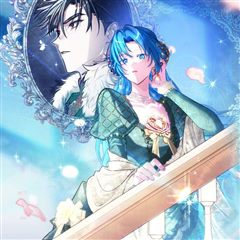
카카오웹툰시어머니지만 고부 갈등은 싫습니다
시집오자마자 죽어버린 남편 때문에 졸지에 과부에 공작가의 큰마님이 되었다. "저희와 같이 살지 않으시겠어요~?" 의붓아들은 그저 해맑게 아내 앞에서 시어머니인 내 편을 들어주고, "앞으로도 바른 몸가짐을 유지해 주시길 바랍니다." 나보다 연상인 며느리는 나를 탐탁지 않아 한다. 이거,…
사이다로판카카오웹툰에서 보기 → -
21카카오웹툰
검은머리 미군 대원수
1910년대로 회귀한 인생 2회차 김유진, 미래 지식으로 역사를 휘어잡다. 언덕을 굴러 내려오는 레토나로부터 아이를 구하려다 죽음을 맞이한 한국인 중대장. 정신을 차려 보니 미래 지식을 가진 채 1900년대 재미 조선인 김유진으로 회귀하고 말았다. 미래를 아는 자, 재벌이 될 것인가,…
사이다개그액션환생카카오웹툰에서 보기 → -
22
 카카오웹툰
카카오웹툰가드패스
평소 먹는 것을 좋아해 뚱뚱하고 큰 체격을 가진 '임세준'. 그는 뚱보라는 놀림에도 신경 쓰지 않는 자존감이 높고 확고한 성격을 가졌다. 그에게 단 한 명의 친구 '서하진'. 그녀는 어릴 적부터 세준을 지켜주기 위해 늘 운동을 배워왔다. 어느 날 세준은 같은 반 일진과 트러블이 생기고…
사이다학원물배틀카카오웹툰에서 보기 → -
23
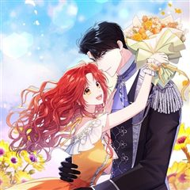
카카오웹툰악녀는 대공을 사로잡았다
소설 속 최애가 죽었다. 여주에게 버림받고 감정을 잃은 그는 더 이상 능력을 쓸 수 없었고, 그가 약해지자 북부는 무너졌다. 그의 시체조차 찾지 못한 채 소설은 주인공들의 해피엔딩만을 그렸다. 그리고 그 소설 속 악녀 ‘슈에르’에 빙의한 나. ‘차라리 그가 여주를 만나기 전에 감정을…
로판로맨틱코미디카카오웹툰에서 보기 → -
24카카오웹툰
지옥사원
인간의 음식에 매료된 악마 쿼터, 사고로 흙수저 인간에게 빙의하다?! 능력을 모두 잃고 인간 <고순무>의 몸에 갇힌 악마는, ‘낮은 등급’ 인간의 삶이 지옥에서의 삶보다 질이 떨어지자 ‘높은 등급’ 인간이 되기로 결심한다. 한 편, 국내 최고의 대기업 <선호 그룹>에선 학력과 경력을…
오피스카카오웹툰에서 보기 → -
25
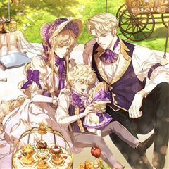
카카오웹툰흑막 남주의 시한부 유모입니다
내가 쓴 소설로 많은 사람들의 인생이 어그러졌다. 이대로 가면 클로드는 크롬벨 제국을 무너뜨릴 최종 흑막으로 자랄 것이다. 하나뿐인 친구이자, 소설 속에서 비극적인 삶을 살게 된 디엘린에게 한 목숨 같은 약속. “클로드 곁은 내가 지킬게.” 클로드를 바르게 키우기 위해 에단을 좋은 아…
로판육아물카카오웹툰에서 보기 → -
26카카오웹툰
황제궁 옆 마로니에 농장
'태양의 손'을 가진 농사 천재, 헤이즐 메이필드. 할아버지가 준 땅문서를 들고 설레는 마음으로 자신의 농장을 찾아가는데… "그 '대단히 높은 신분의 집주인'이… 황제였어?" 위대한 브라타니아 제국의 젊은 황제 이스칸다. 완전무결한 황궁을 꿈꾸던 그에게 닥친 최대 위기. "땅문서에 제…
힐링로판카카오웹툰에서 보기 → -
27
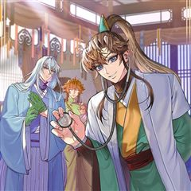
카카오웹툰의원, 다시 살다
해외 의료 봉사를 갔다가 내전에 휘말렸다. 환자 대신 반군의 총을 맞고 간신히 눈을 떴는데 아니, 어린아이가 됐잖아?!? 눈앞에 있는 건 부서진 마차와 특이한 복식의 쓰러진 사람들! "꼭 무림 세계 같네." 한 명이라도 살리기 위해 응급처치를 하던 중, 이곳이 즐겨 읽던 무협 소설,…
힐링액션빙의카카오웹툰에서 보기 → -
28
 카카오웹툰
카카오웹툰남궁세가 손녀딸의 귀환
혈마의 소교주 일화는 스승인 혈마의 뜻에 따라 남궁세가를 멸문시키지만, 혈마의 배신으로 인해 죽음을 앞두고 충격적인 이야기를 듣는다. “이제 천하에 남궁은 너 하나 남았다.” 일화는 자신이 남궁세가에서 오래전에 잃어버린 아이 ‘설화’였고, 간악한 혈마의 수작질을 위해 키워졌단 걸 알게…
로판회귀카카오웹툰에서 보기 → -
29
 카카오웹툰
카카오웹툰퀴퀴한 일기
내 주변에 반드시 한 명은 있을 것만 같은, 어쩌면 나 같기도 한 그녀의 일기. 어느덧 40대의 아기 엄마가 된 주인공 이보람과 그의 군단들의 이야기이다. 너무나 시시하고 쩨쩨해서 누구에게 털어놓기도 멋쩍은 일들이 작은 마음을 가진 그들에겐 늘 뜨겁고 강렬하다! 마음속 깊이 숨어있는…
공감개그카카오웹툰에서 보기 → -
30
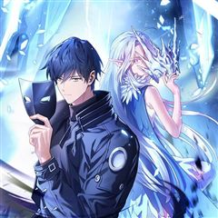
카카오웹툰얼어붙은 플레이어의 귀환
세상이 바뀌고 5년. 최종보스가 나타났다. [지구 에어리어의 최후의 보스, 서리여왕이 출현합니다.] 최후의 보스! 그녀만 처치하면 예전처럼 살 수 있다! 인류 최고의 플레이어, 어둑서니를 포함한 다섯 명의 플레이어가 마침내 서리여왕을 쓰러뜨리지만... 그들은 기나긴 잠에 빠지는 혹독한…
사이다학원물게임판타지카카오웹툰에서 보기 →